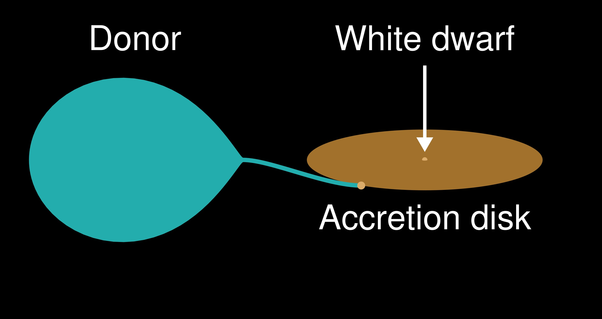

Explosions, Variable Stars, and Compact Remnants#
Monday, Feb. 3, 2025
astrophysics of stars and planets - spring 2025 - university of arizona, steward observatory
Today’s Agenda#
Announcements (2m)
Reading Overview/Key Points (10m)
In-Class Activity 6 (20m)
Debrief/Reminders (2m)
Core Collapse and Nucleosynthesis#
You have built an iron reach core from your massive star, but what leads to “core-collapse”?
The Start of Core-Collapse#
Photodisintegration - a nuclear process in which an atomic nucleus absorbs a high-energy gamma ray, enters an excited state, and immediately decays by emitting a subatomic particle. (\(\gamma\),\(n\)),(\(\gamma\),\(p\)),(\(\gamma\),\(\alpha\))
Remove thermal pressure support in the core.
Increasing density causes electron capture (inverse beta-decay), removing electron degenerecy pressure support.
Graviational instability occurs.
The result is a core-collapse supernova explosion and likely a neutron star compact remnant. But, what else?

Period Table of elements for astronomers showing contributions from various sources including core-collapse supernovae.
We will return to our discussion of nucleosynthesis in Chapter 6!
Pulsational Variables#

A selection of intrinsically variable stars placed on an HR diagram.
Some classifications:
Classical Cepheids - Cepheids (or Type I Cepheids), are young, metal-rich stars crossing the instability strip with spectral types F6–K2, with periods of days to months. They appear to be purely radial pulsators.
W Vir variables (or Type II Cepheids) - same sort of behavior as the Classical Cepheids but are metal-poor, older, and lower-mass stars.
RR Lyrae - are horizontal branch stars in the instability strip with spectral types A2–F2. They have periods of a day down to a couple of hours and are useful in determining distances to globular clusters in our galaxy and in nearby galaxies.
\(\beta\) Cepheid and \(\gamma\) Doradus - main sequence stars (or close) of spectral types A and B. They are nonradial pulsators (and, arguably, radial) and multiple modes are common. Periods tend to be longer than the dynamic time scale, which suggests that the modes are gravity (g-) modes.
\(\delta\) Scuti - variables are spectral class A to early F (i.e., at the bluer end of spectral class F) stars on or near the main sequence (luminosity class V to III) in the instability strip.
ZZ Ceti - variable stars are white dwarfs with hydrogen atmospheres (DA white dwarfs) sitting in their own instability strip (see Fig. 2.23) on the white dwarf cooling curve. Only nonradial gravity modes are seen, often many in a single star. A corresponding strip exists for white dwarfs with helium atmospheres (the DB variables)
Mira variables - luminous red supergiants belonging in the class of Long Period Variables (LPV in Fig. 2.23) with periods ranging from roughly 100 to 700 days. Radial modes seem to be the norm. Closely related to them are the Semi-Regular Variables (SRV), which act as their name implies. All stars of more than main sequence luminosity and redward of the Cepheid instability strip are to some extent variable.
Explosive Variables#
Novae#
Nova and recurrent nova explosions are the names given to the outbursts fueled by degenerate hydrogen ignition. A drawing of a cataclysmic system is shown in Fig. 2.25. Mass is grav- itationally drawn off a donor star and forms an accretion disk around the cataclysmic variable (of one sort or another).

Novae (often referred to as “classical novae”) may yield a total of \(10^{44}\) \(10^{45}\) ergs upon eruption with some \(10^{38}\) ergs being radiated in the optical. Mass lost during the explosion ranges from \(10^{−5}\) to \(10^{−4}\) solar masses.
Supernovae#
Supernovae (SN or, sometimes, SNe) are the most spectacular variables of all. At maximum light, they are as bright as a whole, smallish galaxy, and recognizing them for what they are was part of the total process between 1900 and 1925 C.E. that sorted out the approximate size of the Milky Way and demonstrated the existence of other galaxies.
Type I Supernovae#
Type I spectra show no evidence of any hydrogen strongly suggesting that the object that explodes has lost its hydrogen envelope (in a strong wind or by transfer to a companion star), leaving an “undressed” core.
Type Ia#
Occur in a wide range of galaxies, locations, and stellar populations.
There is no evidence for formation of a neutron star or other condensed remnant.
All observations are consistent with and even suggest that the energy source for these is explosive fusion of about one solar mass of carbon and oxygen to iron-peak elements, especially \(^{56}\rm{Ni}\).

A selection of light curves for Type I SN.
Type II Supernovae#
The Type II spectrum has strong hydrogen absorption lines and are products of the collapsing cores of mas- sive stars.
nearly always, occur in galaxies with recent, vigorous, star formation and in regions of that star formation (i.e., among Pop I stars)
radio and x-ray sources, usually at later times than the visible light peak
Evidence for this mechanism includes the presence of the collapsed core (pulsar or rapidly rotating magnetized neutron star) at the center of the SN1054 remnant, the Crab Nebula, and the burst of neutrinos seen from SN1987A

A selection of light curves for Type II plateau and linear subtypes along with SN1987A and SN1993J. Also shown is “56Co,” whose radioactive decay helps power the light curve resulting in a decline rate of roughly one magnitude per 100 days.
“plateau” subtype - SN II-P, where the decline is held up for a while “linear” subtype - SN II-L, which declines with essentially no hang-up
SN1987A#
SN1987A in the Large Magellanic Cloud (LMC) was first observed visually and photographically on February 24, 1987. Perhaps the two most important observations made of SN1987A are the detection of neutrinos prior to the optical discovery and the later detection of radioactive \(^{56}Co\).
Neutrinos - Neutrinos were detected about a quarter of a day before optical discovery, with energies within the proper range and over a time scale (5 to 10 s) that seems reasonable given the time scale estimated for their production.
\(\gamma\)-ray lines of \(^{56}\rm{Co}\) - The significance of this is the decay sequence \(^{56}\rm{Ni}\rightarrow^{56}\rm{Co}\rightarrow^{56}Fe\), which not only makes \(^{56}\rm{Fe}\) but also provides an energy source for the expanding ejecta.

Shown are the spectra of the four major types of supernovae captured about one week after maximum light in the \(B\)-band (“\(t \sim\) 1 week”) or after core collapse (“\(\tau \sim\) 1 week”). The ordinate is essentially magnitudes in a spectral band (\(f_{\nu}\) is flux) and the wavelengths of the abscissa are in the rest frame of the supernova.
Which of the above Supernovae are Type I?#
A,B, and D. Supernova 1987a is a well-known supernova explosion expected to be the result of the death of a massive star.
White Dwarfs, Neutron Stars, and Black Holes#
Neutron Stars#
neutron stars are compact enough that the equation in which pressure balances gravity must be rewritten with gravity described by general relativity, rather than its Newtonian approximation. The TOV equations.
the equation of state, describing how pressure depends on density, temperature (and composition), must include the nuclear force as well as quantum mechanics and degeneracy pressure
Black Holes#
Described by a mass, angular momentum, and electric charge. That’s it.


Star Formation#
Within the Milky Way at present, most star formation occurs within clouds of gas that are
molecular clouds (mostly H2 but with CO as an important tracer)
cool (meaning 5–15 \(K\))
dense with \(10^3\) or more \(H_2\) \(\rm{cm}^{-3})\), which is thinner than thin air, but dense compared to the galactic gas average of about one hydrogen atom \(\rm{cm}^{-3})\)
largish (sizes of parsecs and masses up to \(10^{5} M_{\odot}\))
primarily located in the spiral arms of the disk
The Initial-Mass-Function#
A particular area of disagreement is how far toward small masses the IMF continues to rise and, therefore, how much matter is more or less hidden in very small stars or brown dwarfs whose lifetimes are longer than the age of the universe. And is this the same everywhere?
Definition 48
In-Class Assignment#
In-Class Assignment 6 on Supernova Lightcurves is here.